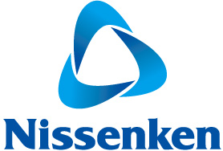

Home > Nissenken outline > about logo mark


Nissenken changed from incorporated foundation to general incorporated foundation in March 1, 2012.
Now the name of it is [General Incorporated Foundation-Nissenken Quality Evaluation Center].
At the same time, the logo also changed new.
The close connection among consumers, products and makers conveys our faith in safeguarding life, which is really the reflection of Nissenken’s mission. The circle signifies the rotation of the Earth and also implies our ceaseless desire to explore the world.